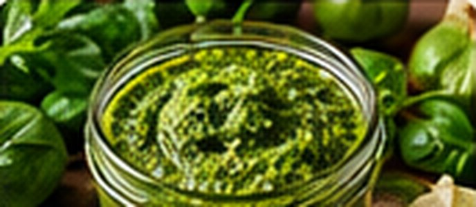

Genovese Basil Pesto Freezer Cubes
Italian · Approx. 25 minutes

Ingredients
- 2 packed cups Genovese basil leaves, washed and thoroughly dried
- ⅓ cup toasted pine nuts or walnuts
- 2 garlic cloves
- ½ cup grated Parmesan
- ½ cup extra-virgin olive oil, plus a little if needed
- ½ tsp kosher salt, to taste
- 1 tbsp lemon juice, optional
Directions
- Pulse basil, nuts, garlic and Parmesan in a food processor until chopped.
- With motor running, add olive oil gradually until a spoonable paste forms; season with salt and optional lemon.
- Immediately portion into small freezer-safe silicone molds or containers; cover and freeze promptly.
- Once solid, transfer portions to labeled airtight freezer bags. Keep frozen until needed.
- Thaw individual portions in the refrigerator or stir directly into hot cooked pasta or sauce. Do not store pesto at room temperature.
Notes & serving ideas
Use for pasta, grilled chicken, sandwiches and vegetable bowls. For best flavor use within 2–3 months. Do not can pesto or store homemade garlic-in-oil pesto unrefrigerated. If not freezing immediately, refrigerate fresh pesto and use within 3 days.